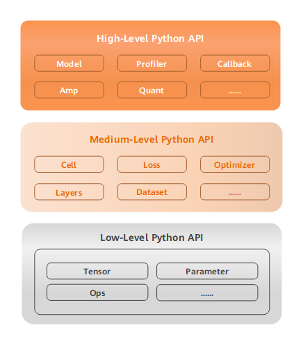

MindSpore API Overview

Overall Architecture
MindSpore is a deep learning framework in all scenarios, aiming to achieve easy development, efficient execution, and all-scenario coverage. Easy development features include API friendliness and low debugging difficulty. Efficient execution includes computing efficiency, data preprocessing efficiency, and distributed training efficiency. All-scenario coverage means that the framework supports cloud, edge, and device scenarios.
The overall architecture of MindSpore consists of the Mind Expression (ME), Graph Engine (GE), and backend runtime. ME provides user-level APIs for scientific computing, building and training neural networks, and converting Python code of users into graphs. GE is a manager of operators and hardware resources, and is responsible for controlling execution of graphs received from ME. Backend runtime includes efficient running environments, such as the CPU, GPU, Ascend AI processors, and Android/iOS, on the cloud, edge, and device. For more information about the overall architecture, see Overall Architecture.
Design Concept
MindSpore originates from the best practices of the entire industry and provides unified model training, inference, and export APIs for data scientists and algorithm engineers. It supports flexible deployment in different scenarios such as the device, edge, and cloud, and promotes the prosperity of domains such as deep learning and scientific computing.
MindSpore provides the Python programming paradigm. Users can use the native control logic of Python to build complex neural network models, simplifying AI programming. For details, see Implementing an Image Classification Application.
Currently, there are two execution modes of a mainstream deep learning framework: a static graph mode and a dynamic graph mode. The static graph mode has a relatively high training performance, but is difficult to debug. On the contrary, the dynamic graph mode is easy to debug, but is difficult to execute efficiently. MindSpore provides an encoding mode that unifies dynamic and static graphs, which greatly improves the compatibility between static and dynamic graphs. Instead of developing multiple sets of code, users can switch between the dynamic and static graph modes by changing only one line of code. For example, set context.set_context(mode=context.PYNATIVE_MODE) to switch to the dynamic graph mode, or set context.set_context(mode=context.GRAPH_MODE) to switch to the static graph mode, which facilitates development and debugging, and improves performance experience.
A neural network model is usually trained based on gradient descent algorithm, but the manual derivation process is complex and the result is prone to errors. The automatic differentiation mechanism of MindSpore based on source code transformation (SCT) uses a functional differential programming architecture and provides Python APIs at the API layer, including the expression of control flows. Users can focus on the native mathematical expression of the model algorithm without manual derivation. The sample code for automatic differentiation is as follows:
import mindspore as ms
from mindspore import ops
grad_all = ops.composite.GradOperation()
def func(x): return x * x * x
def df_func(x):
return grad_all(func)(x)
@ms.ms_function
def df2_func(x):
return grad_all(df_func)(x)
if __name__ == "__main__":
print(df2_func(ms.Tensor(2, ms.float32)))
In the first step, a function (computational graph) is defined. In the second step, automatic differentiation is performed by using a backward API provided by MindSpore, and the first derivative function (computational graph) is defined. In the third step, the second derivative function (computational graph) is defined. After the input is given, the second derivative of the function defined in step 1 can be obtained at the specified position. The result of the second derivative is 12.
In addition, the SCT can convert Python code into an intermediate representation (IR) of a MindSpore function. The IR constructs a computational graph that can be parsed and executed on different devices. Before the computational graph is executed, a plurality of software and hardware collaborative optimization technologies are used, and performance and efficiency in different scenarios such as device, edge, and cloud, are improved.
Improving the data processing capability to match the computing power of AI chips is the key to ensure the ultimate performance of AI chips. MindSpore provides multiple data processing operators and uses automatic data acceleration technology to implement high-performance pipelines, including data loading, data demonstration, and data conversion. It supports data processing capabilities in all scenarios, such as CV, NLP, and GNN. MindRecord is a self-developed data format of MindSpore. It features efficient read and write and easy distributed processing. Users can convert non-standard and common datasets to the MindRecord format to obtain better performance experience. For details about the conversion, see MindSpore Data Format Conversion. MindSpore supports the loading of common datasets and datasets in multiple data storage formats. For example, users can use dataset=dataset.Cifar10Dataset("Cifar10Data/") to load the CIFAR-10 dataset. Cifar10Data/ indicates the local directory of the dataset, and users can also use GeneratorDataset to customize the dataset loading mode. Data augmentation is a method of generating new data based on (limited) data, which can reduce the overfitting phenomenon of network model and improve the generalization ability of the model. In addition to user-defined data augmentation, MindSpore provides automatic data augmentation, making data augmentation more flexible. For details, see Automatic Data Augmentation.
The deep learning neural network model usually contains many hidden layers for feature extraction. However, the feature extraction is random and the debugging process is invisible, which limits the trustworthiness and optimization of the deep learning technology. MindSpore supports visualized debugging and optimization (MindInsight) and provides functions such as training dashboard, lineage, performance analysis, and debugger to help users detect deviations during model training and easily debug and optimize models. For example, before initializing the network, users can use profiler=Profiler() to initialize the Profiler object, automatically collect information such as the operator time consumption during training, and record the information in a file. After the training is complete, call profiler.analyse() to stop collecting data and generate performance analysis results. Users can view and analyze the visualized results to more efficiently debug network performance. For details about debugging and optimization, see Training Process Visualization.
As a scale of neural network models and datasets continuously increases, parallel distributed training becomes a common practice of neural network training. However, policy selection and compilation of parallel distributed training are very complex, which severely restricts training efficiency of a deep learning model and hinders development of deep learning. MindSpore unifies the encoding methods of standalone and distributed training. Developers do not need to write complex distributed policies. Instead, they can implement distributed training by adding a small amount of codes to the standalone code. For example, after context.set_auto_parallel_context(parallel_mode=ParallelMode.AUTO_PARALLEL) is set, a cost model can be automatically established, and a better parallel mode can be selected for users. This improves the training efficiency of neural networks, greatly decreases the AI development difficulty, and enables users to quickly implement model. For more information, see Distributed Training.
Level Structure
To support network building, entire graph execution, subgraph execution, and single-operator execution, MindSpore provides users with three levels of APIs which are Low-Level Python API, Medium-Level Python API, and High-Level Python API in ascending order.

Low-Level Python API
The first is low-level API, including tensor definition, basic operators, and automatic differential modules. Users can use the low-level API to easily define tensors and perform derivative calculation. For example, users can customize tensors by using the
TensorAPI, and use theGradOperationoperator in theops.compositemodule to calculate the derivative of the function at a specified position.Medium-Level Python API
The second is medium-level API which encapsulates low-cost APIs and provides modules such as the network layer, optimizer, and loss function. Users can flexibly build neural networks and control execution processes through the medium-level API to quickly implement model algorithm logic. For example, users can call the
CellAPI to build neural network models and computing logic, add the loss function and optimization methods to the neural network model by using thelossmodule andOptimizerAPI, and use thedatasetmodule to process data for model training and evaluation.High-Level Python API
The third is high-level API. Based on the medium-level API, it provides advanced APIs such as training and inference management, mixed precision training, and debugging and optimization, facilitating users to control the execution process of the entire network and implement training, inference, and optimization of the neural network. For example, users can use the
ModelAPI, specify the neural network model to be trained and related training settings, train the neural network model, and debug the neural network performance through theProfilerAPI.